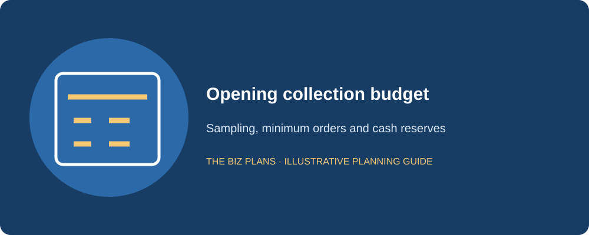
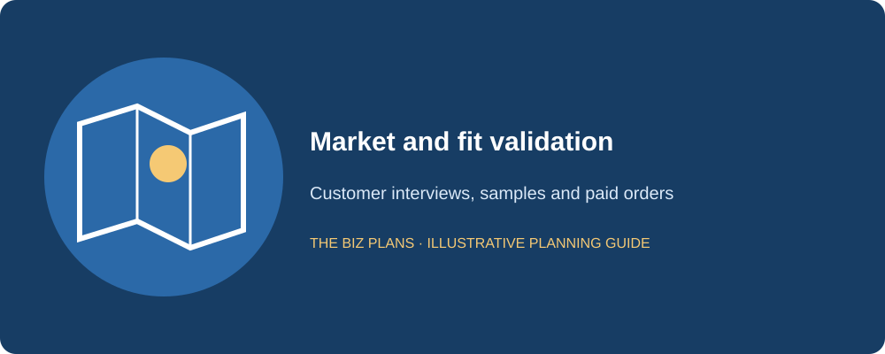
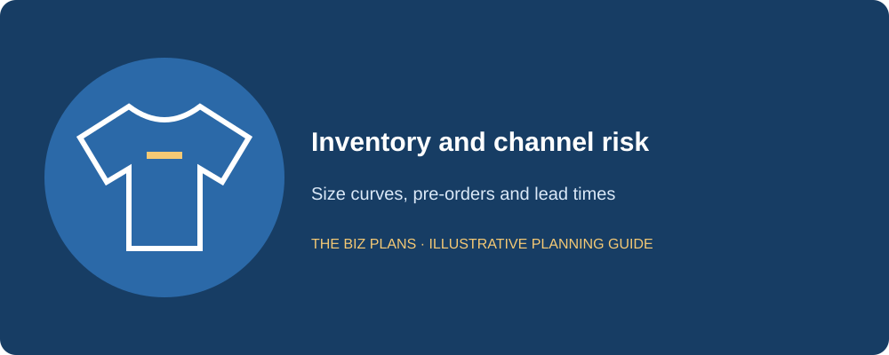
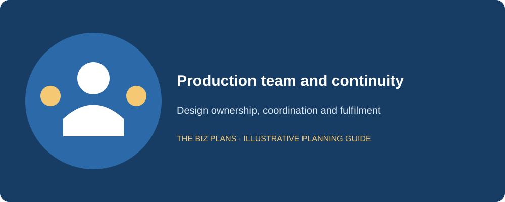
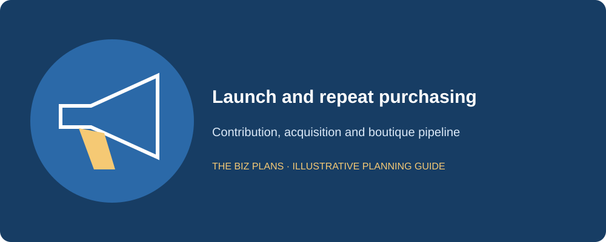
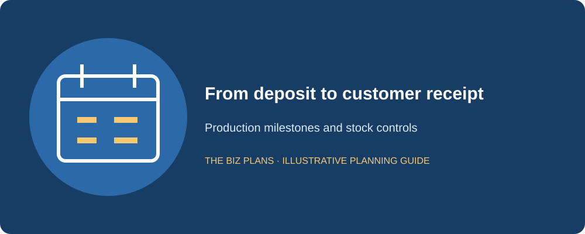

This clothing line business plan sample follows Northloom Apparel, a fictional Toronto sustainable streetwear label founded by a designer with eight years in apparel production. The opening model combines direct-to-consumer online sales with two wholesale boutique accounts in Year 1. Read the sample sections first, then the italic callouts explaining what a lender needs to verify. The business is fictional, and its costs, sales and margins are planning examples rather than market evidence.
Use the guide to connect a creative collection to the cash required to produce it. You will see how minimum order quantities affect size inventory, why online and boutique margins need separate forecasts, and how payments to a factory can precede customer receipts by months. This fashion business plan sample includes an opening budget, three linked statements and a clothing brand business plan template checklist. It also describes how pre-orders could test demand without treating social-media attention as a sale. Replace the assumptions with your own factory quotes, channel terms and customer research.
All company details and financial figures in this sample are illustrative examples showing plan structure — not market data, and not forecasts for any real business.
How to use this sample
- Read the annotations to understand what a lender or investor checks in each section.
- Swap in your actual quotations, customer research and operating assumptions; recalculate the linked statements.
- Do not submit a fictional sample to a lender. Use business plan writing services to develop an application based on your business.
Start with a range plan and supplier quotations. A price per garment means little without the minimum run, colour options, size allocation, defect allowance and freight terms. Keep a dated assumptions register so the cost of each collection can be traced from tech pack to landed inventory. Changing a fabric or adding a colour can change the minimum order and cash requirement even when the headline retail price stays the same.
How much does it cost to start a clothing line in Canada?
Northloom’s illustrative startup range is $45,000–$85,000, with an illustrative base budget of $85,000. This is a scenario for a small label, not a national average. A made-to-order range, outsourced capsule and stocked multi-style launch have different funding needs. The table includes the first production run as opening inventory; it does not add that stock again under a second inventory line.
| Use of funds | Illustrative amount |
|---|---|
| Tech packs and pattern development | $8,000 (illustrative) |
| Sample runs and fit testing | $4,000 (illustrative) |
| First production run: initial garment inventory | $30,000 (illustrative) |
| E-commerce build: capitalized in this sample | $6,000 (illustrative) |
| Branding and photography | $5,000 (illustrative) |
| Packaging inventory | $3,000 (illustrative) |
| Launch marketing | $8,000 (illustrative) |
| Working-capital cash reserve | $21,000 (illustrative) |
| Total | $85,000 (illustrative) |
The illustrative initial run contains 1,000 garments at an illustrative $30 landed cost each. A purchase order must clarify whether the minimum applies to the entire order, each style or each colour. We will allocate sizes using test-order evidence rather than split them equally. Packaging is stock used during fulfilment, while product development and launch activities are treated as pre-opening expense in this simplified example.
The illustrative $21,000 cash reserve remains available after the initial stock and setup spending. It must cover returns, operating expenses and the next collection deposit before the first run sells out. Obtain quotes for freight, import costs where applicable, quality inspection and storage. The funding plan should distinguish the nominal operating-line limit from what a lender will actually advance against eligible inventory.

The lender reads for the complete landed cost, a defensible size curve and enough liquidity to fund replenishment without borrowing against unsaleable stock.
How do clothing brands make money?
A clothing brand makes money when realized selling prices exceed landed product costs and the expenses required to sell, ship and service the order. Northloom assumes an illustrative 65% DTC gross margin and 45% wholesale gross margin before marketing, fulfilment and overhead. At an illustrative $100 net DTC sale, $35 of landed goods cost leaves $65 of gross profit. That is not net earnings: advertising, returns processing, shipping subsidies and staff still need payment.
The illustrative Year 1 revenue mix is 80% DTC and 20% wholesale. The blended gross margin is therefore 61%, producing illustrative gross profit of $109,800 on $180,000 revenue. As wholesale grows to an illustrative 40% of Year 3 revenue, the blended margin falls to 57% even though sales rise. Selling more through boutiques can diversify acquisition and demand, but it does not preserve the online margin automatically.
Our model uses net revenue after refunds and discounts. Wholesale purchase orders specify prices, delivery dates, payment terms and return rights. DTC contribution must be measured after customer-acquisition and fulfilment costs, not advertised as profit simply because the retail markup looks attractive. No industry-wide margin or income claim is implied by this sample.
Sample executive summary
Northloom Apparel will be a Toronto-based sustainable streetwear label offering a compact opening capsule through our online store and two fictional boutique accounts. I founded the company after eight years in apparel production, including pattern coordination, sample review and factory scheduling. Our concept combines dependable everyday fit with documented material choices and a limited assortment that can be managed within a small team. We will substantiate environmental claims rather than rely on broad green language.
Our first collection will prioritize a small number of styles and evidence-based size allocations. We will use fit sessions, test orders and a clearly disclosed pre-order window to assess demand before committing to replenishment. Online sales will provide direct customer feedback, while boutique relationships will test the range in a different buying context. Both channels will have separate pricing, costs and delivery assumptions.
The illustrative opening budget is $85,000, funded by an illustrative $50,000 operating line and $35,000 owner equity. Illustrative revenue grows from $180,000 in Year 1 to $520,000 in Year 3 as repeat orders and wholesale accounts develop. Inventory is monitored by style, colour and size, with markdown decisions made before ageing stock absorbs another season’s cash. The founder will oversee production and quality while contracted specialists support photography, fulfilment and bookkeeping. Repayment depends on stock converting to collected sales, not on the paper value of unsold garments.
A lender wants to see the operator’s production experience, the stock commitment, distinct channel economics and a cash-backed repayment story.
Sample market analysis
Northloom’s fictional target is Toronto customers seeking everyday streetwear with consistent fit, useful product information and traceable material choices. We hypothesize that customers will value a focused collection they can wear frequently. These are propositions to test, not demographic statistics or proof of demand. We will compare independent labels, established chains, second-hand options and the choice to buy no new clothing.
Research will include customer interviews, competitor product and price reviews, sample fit sessions and paid test orders. Interviews will separate stated enthusiasm from purchase behaviour. We will record the source, date and limitations of each observation and ask what customers already own, how they judge fit and what makes them return a garment. Boutique buyers will be interviewed separately because their buying calendars, margin requirements and service expectations differ from individual shoppers.
A real market section should identify named competitors and show how their assortment, lead times, returns policies and product claims affect our decisions. Any external numbers added later must cite the original dataset, geography and period. This sample makes no numerical claims about market growth, consumer sustainability preferences or Canadian apparel spending. Our opening forecast will be supported by units and realized prices rather than an unsupported share of a large fashion market.

Lenders distinguish a documented order or paid test from a social-media follower; research must change the range plan or sales assumptions to be useful.
Build an inventory-aware funding plan
Use real production quotations and channel terms to prepare your application.
Explore business plan servicesWhat makes a clothing line plan different?
Inventory is the business and the risk. The illustrative 1,000-unit launch ties up $30,000 before a customer buys. Track sell-through by size rather than celebrating an aggregate sell-out claim while slow sizes remain. At an illustrative 70% first-window sell-through, 300 garments are still unsold; their carrying cost and likely markdown must appear in the downside case. Reorder only after checking the remaining size mix.
DTC and wholesale are separate models. Show the channel mix and its weighted margin. Boutique sales may require receivables, fixed delivery windows and minimum reorder volumes. Direct sales require acquisition spending, returns handling and individual fulfilment. A forecast that labels both channels as premium sales while using one margin hides the economics the bank needs to understand.
Pre-orders can validate demand. A disclosed pre-sale window can help test styles and sizes before a factory commitment. Track collected deposits, cancellations and refund obligations separately; cash received in advance is not automatically earned revenue. Crowdfunding promises create delivery obligations too. Do not spend refundable customer money without a funded fulfilment and contingency plan.
Geography changes the cash timeline. For an illustrative 90-day production cycle, map the factory deposit, balance payment, freight, receiving inspection and eventual sale dates. Domestic production may reduce some lead-time exposure but still requires quotes and capacity confirmation. Evaluate the full landed cash cycle rather than assume either geography is always cheaper.

Sample company description
Northloom will operate as a fictional Ontario corporation owned by the designer-founder. Production will be outsourced, with specifications and quality acceptance documented before ordering. We will retain supplier evidence for material and environmental statements and review garment labelling, online consumer disclosures, returns and any importing obligations with appropriate advisers. The proposed sustainable positioning describes an intended approach; it is not a certification claim.
We will maintain separate business banking, bookkeeping and approval records. The sample assumes taxable revenues will exceed the CRA’s $30,000 small-supplier threshold. The registration date depends on how and when the threshold is exceeded, with associated businesses considered where applicable; consult the CRA’s GST/HST registration guidance. Collections of HST are not sales revenue. The real cash forecast must distinguish remittances, recoverable input tax credits and any taxes that remain a cost.
We will check applicable Ontario employment and WSIB obligations before engaging staff, rather than assume that every worker is an independent contractor. An accountant will review payroll and tax setup, while qualified advisers review the contracts and insurance relevant to our activities. Each compliance task will have an owner, a due date and supporting evidence. The fictional company described here is separate from The Biz Plans and from the real author’s practice.
The reviewer wants the actual borrower, responsible supplier arrangements and defensible product claims, with the related costs included in the plan.
Sample organization and management
I will own design, factory communication and quality approval. A contracted production coordinator will cover supplier follow-up when I am unavailable, and a fulfilment partner will manage storage and dispatch against service standards. Bookkeeping support will reconcile sales, tax, inventory and boutique receivables. Contracts will define access, responsibilities and intellectual-property ownership rather than leave essential production information in personal inboxes.
The illustrative founder salary is $48,000 in Year 1, rising with the team’s capacity in later years. Compensation is an expense already in the forecast, not an extra distribution on top of net profit. Before adding staff, we will show what work transfers, what revenue capacity it creates and whether the payroll is funded during a weaker collection.
The continuity file will hold approved patterns, tech packs, size specifications, supplier contacts and order-status records. An alternate specialist will be briefed before the next collection, so a founder absence does not leave the factory without decisions. We will test this handover during a normal sampling cycle.

Operator experience is strongest when paired with a practical backup and a compensation budget that the forecast can support.
Sample products and pricing
The opening capsule will include heavyweight tees, a sweatshirt and a versatile overshirt. We will limit initial colours and use shared trims where appropriate to control complexity. Each product has a specification, approved sample and tolerance checklist. Fit sessions will include the intended size range and record actionable findings rather than rely on a single model’s appearance.
Pricing will be set using landed cost and a target contribution by channel. The product worksheet will include cutting losses, packaging, quality rejects, freight and any duties that remain a cost. The quoted factory price is only one component. Online descriptions will state composition, measurements and care clearly to reduce avoidable fit returns.
Returned garments will be inspected and classified for resale, repair or write-down. We will not assume every return re-enters saleable stock at full value. Boutique orders will use agreed assortment and size allocations, with no additional designs launched simply to win an account that cannot meet the contribution requirement.
A lender reads for a manageable assortment, honest realized pricing and returns treatment that does not overstate saleable inventory.
Sample marketing and sales plan
We will introduce Northloom through product-led content showing fit, construction and documented materials. A small paid test will measure conversion and acquisition cost before larger spending. Email consent and a clear customer-service process will support repeat orders. The illustrative launch allowance of $8,000 is separate from the illustrative recurring Year 1 marketing budget of $20,000.
Our two fictional boutique accounts are planning assumptions, not signed customers. The real plan must show purchase orders or a properly qualified buyer pipeline. We will distinguish a buyer meeting from a committed order and track expected delivery and payment dates. DTC launch targets will be tested against available stock and realistic returns, not a promise that every visitor converts.
Monthly reviews will compare net sales, contribution, repeat purchases and stock ageing. If a collection underperforms, we will test a limited product adjustment and controlled markdown instead of automatically buying more advertising. The next production deposit will be approved only after a revised cash forecast.

Marketing traction must be measured in collected, profitable orders and connected to the next inventory commitment.
Sample apparel operations plan
Every factory order will reference an approved tech pack and sample, with written milestones for deposit, production, inspection and delivery. We will inspect quantities and quality on receipt before releasing stock for sale. Inventory records will identify style, colour, size and landed cost, and the store will publish accurate availability rather than accept orders for unconfirmed replenishment.
Weekly stock reviews will compare units sold, returns, aged sizes and reorder timing. We will use smaller replenishment runs where commercially feasible, and test the cost of that flexibility. A backup supplier must meet quality and lead-time requirements before we rely on it; an emergency name on a list is not approved capacity.
The monthly cash calendar will include factory deposits, freight, boutique receipts, platform settlements and refunds. For a delayed run, we will update customer communications and funding needs together. Quality problems may require replacement production and refunds at the same time. The contingency case must fund both without assuming that the operating-line lender advances against disputed stock.

The lender follows the cash conversion cycle and wants clear controls over supplier delays, refunds and obsolete stock.
Illustrative three-year financial statements
Every financial amount, rate and ratio in this sample is illustrative. Tables are in CAD; sales exclude GST/HST. The assumed 15% tax provision is a modelling simplification, not a statement of the business’s applicable tax rate. Actual taxes, remittance timing and recoverable input tax credits require accountant review. These annual statements are linked, but a real financing application also needs monthly cash flow and a complete debt schedule.
The illustrative opening position is $21,000 cash, $33,000 garment and packaging inventory and a $6,000 website asset. An illustrative $25,000 pre-opening loss represents development, samples, photography and launch spending. The $50,000 operating line is assumed fully drawn at launch only for this simplified scenario; real availability depends on approval, covenants and eligible security. Year 1 DTC/wholesale revenue is illustratively $144,000/$36,000; Year 3 is $312,000/$208,000.
| Line item | Year 1 (illustrative) | Year 2 (illustrative) | Year 3 (illustrative) |
|---|---|---|---|
| Revenue | $180,000 | $340,000 | $520,000 |
| Direct cost of sales | $70,200 | $139,400 | $223,600 |
| Gross profit | $109,800 | $200,600 | $296,400 |
| Founder salary | $48,000 | $60,000 | $72,000 |
| Recurring marketing | $20,000 | $35,000 | $48,000 |
| Other operating expenses | $22,000 | $32,000 | $46,000 |
| EBITDA | $19,800 | $73,600 | $130,400 |
| Depreciation | $2,000 | $2,000 | $2,000 |
| Interest | $5,000 | $4,000 | $3,000 |
| Profit before tax | $12,800 | $67,600 | $125,400 |
| Tax provision: illustrative 15% | $1,920 | $10,140 | $18,810 |
| Net profit | $10,880 | $57,460 | $106,590 |
| Line item | Year 1 (illustrative) | Year 2 (illustrative) | Year 3 (illustrative) |
|---|---|---|---|
| Net profit | $10,880 | $57,460 | $106,590 |
| Depreciation added back | $2,000 | $2,000 | $2,000 |
| Net working-capital cash movement | ($8,000) | ($15,000) | ($17,000) |
| Cash from operations, after interest and tax | $4,880 | $44,460 | $91,590 |
| Replacement capital spending | ($2,000) | ($3,000) | ($4,000) |
| Debt principal or operating-line reduction | ($10,000) | ($10,000) | ($15,000) |
| Owner dividends | $0 | $0 | $0 |
| Net change in cash | ($7,120) | $31,460 | $72,590 |
| Opening cash | $21,000 | $13,880 | $45,340 |
| Closing cash | $13,880 | $45,340 | $117,930 |
| Line item | Year 1 (illustrative) | Year 2 (illustrative) | Year 3 (illustrative) |
|---|---|---|---|
| Cash | $13,880 | $45,340 | $117,930 |
| Inventory and packaging | $45,000 | $60,000 | $75,000 |
| Trade receivables | $6,000 | $10,000 | $16,000 |
| Deposits and prepayments | $0 | $0 | $0 |
| Net fixed assets | $6,000 | $7,000 | $9,000 |
| Total assets | $70,880 | $122,340 | $217,930 |
| Trade payables | $10,000 | $14,000 | $18,000 |
| Total debt outstanding | $40,000 | $30,000 | $15,000 |
| Owner contributed capital | $35,000 | $35,000 | $35,000 |
| Retained earnings, including pre-opening loss | ($14,120) | $43,340 | $149,930 |
| Total liabilities and equity | $70,880 | $122,340 | $217,930 |
The opening model records pre-launch spending separately from recurring operating expenses. Capitalized assets are depreciated; stock held for sale remains inventory until sold or written down. Cash reserved for payroll is not an opening-day expense. The balance sheet carries the pre-opening loss in retained earnings, preventing funding and setup costs from disappearing between statements. Real accounting treatment may differ and should be confirmed before filing or submission.
This example assumes no year-end unpaid payroll or tax, no dividends and no unlisted financing. It shows supplier credit explicitly where assumed, rather than silently treating unpaid invoices as free cash. Tax and payroll balances still need separate monthly schedules. Do not infer that a positive annual closing cash balance guarantees every month is funded; test the lowest cash point, delayed collections and required debt payments.

Lenders lend against available repayment cash, not accounting profit. Trace the cash tied up in inventory or receivables and deduct required principal and replacement spending before asserting debt capacity.
Draft the plan with your own inputs
Use the free generator to organize the business model, then verify your evidence and financial assumptions.
Open the free AI generatorSample funding request and repayment source
Ask: Northloom requests an illustrative $50,000 operating-line limit with an illustrative $35,000 owner contribution. The annual example assumes the line is drawn in full at opening, then reduced by illustrative amounts of $10,000, $10,000 and $15,000. A revolving line is not a fixed term-loan amortization promise; the actual facility may include borrowing-base restrictions, renewal conditions and reporting requirements.
Use of funds: The illustrative $85,000 opening budget funds production inventory, product development, the online store, launch activities and a cash reserve. Submit current factory quotes and show the stock the lender could inspect. The eligibility of equipment or working capital under the CSBFP must be checked with the lender; do not assume a particular advance or program approval.
Repayment source: Collected DTC sales and boutique receivables convert stock back to cash. The forecast retains profit and makes no owner dividends. Monitor aged sizes, returns and account payment terms before promising a line reduction. A downside plan will identify a smaller subsequent run, controlled operating cuts or extra equity instead of assuming obsolete garments have full collateral value.
Inventory financing depends on saleability and the lender’s advance rules; retail markup is not the same as realizable security value.
Clothing line business plan template checklist
Use these ten sections as a working outline. Keep the main document focused on the decisions the recipient must make, and move detailed supporting records into appendices. The opening budget, staffing plan and forecast should tell the same story. A template helps structure the work; it does not establish whether the underlying assumptions are true.
- Executive summary: customer, offer, founder, funding and repayment in one coherent overview.
- Company description: borrower, ownership, location, registrations and milestones.
- Market analysis: local demand, competitors, test results and dated sources.
- Organization: qualifications, responsibilities, remuneration and backup coverage.
- Products or services: specifications, pricing and contribution by channel.
- Marketing: pipeline, conversion assumptions, launch costs and retention.
- Operations: capacity, suppliers, delivery controls and the opening timetable.
- Startup costs and funding: quotations, owner equity, loan ask and reconciled uses.
- Financial statements: income, cash flow, balance sheet, debt and downside cases.
- Risks and appendices: contracts, résumés, quotes, permissions and contingency actions.
Before submission, trace each revenue assumption to units and realized prices, and each production deposit to a dated order. Check that slow sizes, returns and boutique credit terms appear in the cash model. A collection that looks profitable on paper can still consume the cash needed for the next one.
Review the industry business plan hub and bank loan planning requirements. Related annotated examples: pet store, bakery and consulting firm.
Clothing line business plan FAQs
Can I use this as a clothing line business plan template?
Yes. Use the headings and checklist as a structural template, then replace Northloom Apparel’s fictional details and every illustrative figure with your own evidence. Gather current quotations, customer research, staffing costs and contract terms before changing the forecast. Recalculate all linked statements when one assumption changes, and preserve a downside case. Do not submit this sample as your actual business plan. Confirm the recipient’s requirements and obtain qualified review of material accounting, legal or regulatory issues.
How much does it cost to start a clothing brand in Canada?
This sample uses an illustrative $45,000–$85,000 planning range, with an illustrative $85,000 base budget. It is not a Canadian average or a supplier quotation. Your cost depends on product development, minimum runs, fabric, manufacturing geography, freight, website scope and the stock held before launch. Avoid counting the first production run twice as both production expense and opening inventory. Obtain current quotes and preserve cash for returns, delays and the next deposit before setting a financing request.
Do I need a business plan for a fashion startup loan?
A lender considering a fashion startup will commonly request a business plan and projections, but requirements depend on the facility and borrower. Ask for the current checklist before applying. Explain production experience, customer evidence, channel margins, inventory security and how the line or loan will be repaid. Include factory quotations, owner-equity evidence and any committed boutique orders. Pre-orders can support demand validation, but refundable deposits also create obligations. The plan supports credit assessment; it does not replace the lender’s own requirements.
How do I project inventory costs?
Build the forecast by style, colour and size. Start with minimum quantities and landed unit costs, including freight, packaging and any import charges that remain a cost. Separate units purchased, units sold, returns that can be resold and stock written down. Cost of sales follows goods consumed or sold; cash follows deposits and supplier payments. Carry unsold units onto the balance sheet and test slower sell-through. Use actual factory terms, size evidence and a reorder calendar rather than one percentage of revenue.
What financial statements do lenders want?
Confirm the lender’s forecast period and preferred format. An application commonly includes projected income statements, cash flow statements and balance sheets, supported by startup costs, sources and uses, assumptions and a debt schedule. Monthly cash flow matters because annual profits can hide a shortfall during opening, stock purchases or late customer payments. Existing businesses may also need historical records. Keep owner compensation, taxes and borrowing consistent across all statements, and show how the figures reconcile to the operating plan.
Does a plan guarantee financing?
No. A plan explains the business and repayment case, but the lender makes its own credit decision. Owner equity, credit history, security, experience, contract terms and supportable cash flow can all affect the outcome. Clear writing cannot compensate for unverified demand or insufficient funds to complete the opening. Ask which conditions remain outstanding, keep quotations current and test a slower-sales scenario. Professional preparation helps organize the evidence; it does not create an entitlement to a loan or investment.
Where can I get professional help?
The Biz Plans offers Canadian business plan writing and financial modelling led by Atul Jagga, CPA Ontario, in Toronto. Bring your operating assumptions, supplier quotes, founder résumé, available equity and financing goal so the scope reflects your actual clothing line business. Review the business plan services, then contact the team to discuss research, forecasts and the intended lender’s requirements. Professional assistance improves preparation and clarity; the financing decision remains with the lender.
About the author

Written by Atul Jagga, CPA Ontario — Founder of The Biz Plans, Toronto. MBA Finance & Strategy (UBC); 20+ years in corporate finance and consulting involving RBC, BMO, and CIBC. Since 2016, Atul has written bank-financing and investor business plans for Canadian startups and small businesses.
Build a plan around your actual business
Discuss your evidence, operating assumptions and financing goal with The Biz Plans.
Contact The Biz PlansUse this sample as a guide to structure; for research and projections based on your own business, explore our business plan consultant. We confirm the deliverables and scope before work begins.